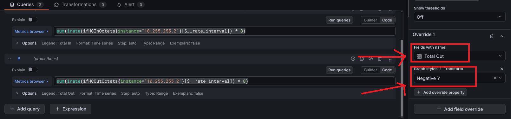

Grafana & Prometheus
URL de Acceso:
https://grafana.js-lab-uy.duckdns.org
Este stack proporciona Observabilidad de la red. A diferencia de Uptime Kuma (que solo verifica si un equipo responde), este sistema recolecta métricas históricas detalladas: consumo de ancho de banda, carga de CPU por núcleo, uso de memoria RAM y estabilidad de las peticiones SNMP.
Este servicio se ejecuta en una instancia de Oracle Cloud Infrastructure (OCI), fuera de la red local en GNS3 del laboratorio.
La conexión con los dispositivos locales se realiza a través de un túnel Tailscale.
Arquitectura de Red
- No hay puertos expuestos a Internet: Los puertos 3000 (Grafana) y 9090 (Prometheus) no están abiertos en el firewall de Oracle.
- Acceso Público y VPN: Para ver los dashboards en grafana se expone publicamente el endpoint
https://grafana.js-lab-uy.duckdns.org, mientras que para acceder a prometheus y snmp exporter, es obligatorio estar conectado a la red Tailscale. - Recolección de Datos: Prometheus (en la nube) alcanza las IPs privadas de la LAN (
192.168.1.x) enrutando el tráfico a través del nodo Tailscale local (Subnet Router).
Capturas de pantalla de los Switches (JPSWA01, JPSWC01) de la topología


Pasos que realicé para la configuración e implementación
Primero ejecutamos un apt update para actualizar los paquetes del sistema:
Una vez actualizados los paquetes, ya podemos instalar tailscale desde la página oficial https://tailscale.com/download:
Ahora podemos ejecutar el comando sudo tailscale up:
Hacemos click en el enlace:
{kind=link}
Nos pedirá que ingresemos una cuenta personal y una vez seleccionada, nuestra máquina virtual de oracle estará dentro de nuestra tailnet.
Luego por la consola debemos aceptar las rutas que está compartiendo/advirtiendo el firewall PfSense:
{kind=link}
Aceptamos las rutas en la instancia de oracle con el comando:
Posteriormente ya podremos hacerle ping a la interfaz de loopback que tiene nuestro router JPRO02, de nuestra topología local en GNS3:
{kind=link}
Una vez actualizado el sistema e instalado tailscale debemos instalar el paquete snmp que contiene la herramienta snmpwalk:
Entonces ahora si podemos utilizar la herramienta snmpwalk.
En un dispositivo remoto de nuestra red interna, por ejemplo el PfSense se parametriza así:
v: Especifica la versión de SNMP (1, 2c, o 3). En este caso configuramos en todos los equipos para que utilice la segunda versión.c: La cadena comunitaria (community string), comopublicoprivate. En este caso es public.IP_o_Hostname: La dirección del dispositivo a consultar.
Luego de esto crearemos una carpeta donde estarán el archivo compose para snmp_exporter que desplegaremos con docker:
Ahora si ya podemos crear nuestro archivo docker-compose con cualquier editor de texto, y pegamos este fragmento en esta ruta /opt/docker/snmp-exporter:
services:
snmp-exporter:
container_name: snmp-exporter
image: prom/snmp-exporter:v0.30.1
ports:
- 9116:9116
volumes:
- ./config:/etc/snmp-exporter
command: --config.file=/etc/snmp-exporter/snmp.yml
restart: unless-stopped
networks:
- monitoring_network
networks:
monitoring_network:
external: true
Una vez guardado los cambios del docker-compose.yml, ahora podemos volver a nuestro directorio home y ya podemos clonar el repositorio con el proyecto llamado generador snmp, el cual nos ayudará muchísimo para generar nuestra configuración SNMP que necesitamos para alimentar a nuestro contenedor:
Primero creamos un directorio y nos movemos a el:
Dentro de ese directorio clonamos el repositorio de github:
Una vez clonado el repositorio dentro de la carpeta snmp_exporter tendremos todo el código fuente para el generador, aunque primero necesitaremos instalar algunas dependencias para poder compilar el generador:
Nos movemos a la carpeta generator ahora:
{kind=link}
Ahora ya podemos compilar el generador y procesar los MIBs. Para entender la importancia de esto, pensemos en los MIBs como si fueran el sistema DNS de las redes o un diccionario de traducción.
Los dispositivos de red se comunican internamente utilizando OIDs (Object Identifiers), que son largas cadenas numéricas jerárquicas difíciles de memorizar para un humano. Los archivos MIB actúan como un mapa que traduce esas cadenas numéricas a nombres legibles (por ejemplo, traduce
.1.3.6.1.2.1.1.5.0asysName). Al compilar los MIBs, permitimos que el generador entienda qué métricas estamos solicitando por su nombre y sepa exactamente qué dirección numérica pedirle al dispositivo. Esto nos ayuda a trabajar únicamente con los nombres de las métricas definidos en los MIBs, sin necesidad de memorizar o buscar manualmente la compleja cadena numérica de cada OID.
Entonces se ejecuta el siguiente comando:
Entonces cuando tengamos el compilador en funcionamiento, ya podremos generar nuestra configuración SNMP, se creará un binario.
En caso de que tire un error como este por ejemplo:
{kind=link}
Primero verificamos si tenemos go instalado, en caso que no, lo instalamos:
{kind=link}
Y para eso lo que hacemos es descargar la versión 1.23.5 utilizando wget, es necesaria esa versión para garantizar la compatibilidad con el código del repositorio:
Entonces lo descomprimimos ahora:
Agregamos /usr/local/go/bin a la variable de entorno PATH:
Y si escribimos go version nos mostrará la version instalada:
ubuntu@JMONSR02:~/monitoring-snmp/snmp_exporter/generator$ go version
go version go1.24.0 linux/amd64
Una vez instalado go, ya podremos lanzar de nuevo el comando:
El cuál nos generará el binario compilado y listo para usar:
{kind=link}
Ahora ya podemos crear nuestra configuración SNMP, editando el archivo generator.yml, por las dudas hacemos una copia de ese archivo:
Lo editamos con cualquier editor de texto:
{kind=link}
En nuestro caso podemos dejar la autenticación por defecto que ya trae, para este caso configuramos la versión 2 para todos los dispositivos de la red.
Entonces debemos establecer el recorrido y poner las métricas específicas que se quieran obtener, por ejemplo:
{kind=link}
---
auths:
public_v2:
version: 2
modules:
# MÓDULO PARA VyOS, pfSense y Linux
nix_device:
walk:
- "SNMPv2-MIB::sysUpTime" # UpTime
- "SNMPv2-MIB::sysName" # Name
- "IF-MIB::ifXTable" # 64 bits meter
- "HOST-RESOURCES-MIB::hrProcessorLoad" # CPU load
- "HOST-RESOURCES-MIB::hrStorageTable" # RAM, Disks
lookups:
- source_indexes: [ifIndex]
lookup: "IF-MIB::ifName"
- source_indexes: [ifIndex]
lookup: "IF-MIB::ifAlias"
- source_indexes: [hrStorageIndex]
lookup: hrStorageDescr
drop_source_indexes: false
overrides:
ifAlias:
ignore: true # Lookup metric
ifDescr:
ignore: true # Lookup metric
ifName:
ignore: true # Lookup metric
# MÓDULO PARA EQUIPOS CISCO (Router y Switch)
cisco_device:
walk:
- "SNMPv2-MIB::sysUpTime"
- "SNMPv2-MIB::sysName"
- "IF-MIB::ifXTable"
- "CISCO-PROCESS-MIB::cpmCPUTotal5minRev"
- "CISCO-MEMORY-POOL-MIB::ciscoMemoryPoolFree"
- "CISCO-MEMORY-POOL-MIB::ciscoMemoryPoolUsed"
- "OLD-CISCO-SYS-MIB::avgBusy5"
- "OLD-CISCO-SYS-MIB::freeMem"
lookups:
- source_indexes: [ifIndex]
lookup: "IF-MIB::ifName"
- source_indexes: [ifIndex]
lookup: "IF-MIB::ifAlias"
overrides:
ifAlias:
ignore: true # Lookup metric
ifDescr:
ignore: true # Lookup metric
ifName:
ignore: true # Lookup metric
donde cada una tiene un significado en especial:
Información del Sistema y Red
- sysUpTime: Tiempo encendido (dispositivo).
- sysName: Nombre de host configurado en el dispositivo.
Interfaces y Tráfico (Común para ambos)
-
ifXTable: Tabla extendida de interfaces.
Nota: Al traer esta tabla, obtienes automáticamente
ifHCInOctetsyifHCOutOctets(los contadores de 64 bits necesarios para medir velocidades de 1Gbps o más sin errores).También trae:
ifName(Nombre de la interfaz) yifAlias(Descripción de la interfaz). -
ifHCInOctets: Tráfico entrante (bytes).
- ifHCOutOctets: Tráfico saliente (bytes).
- ifName: Nombre de la interfaz.
- ifAlias: Descripción de la interfaz.
Módulo VyOS / Linux (nix_device)
-
hrProcessorLoad: Carga del procesador.
- Detalle: Muestra el % de uso de cada núcleo de la CPU individualmente.
-
hrStorageTable: Tabla de almacenamiento unificada.
- Detalle: En Linux/VyOS, esto incluye tanto Discos Duros (sistema de archivos) como Memoria RAM (Physical memory). Por eso usamos filtros luego para separarlos.
Módulo Cisco (cisco_device)
-
cpmCPUTotal5minRev: Uso de CPU (Cisco Moderno).
- Detalle: Promedio de uso de CPU en los últimos 5 minutos (Estándar recomendado para Cisco).
-
ciscoMemoryPoolFree: Memoria Libre (Cisco Moderno).
- Detalle: Cantidad de bytes libres en el pool de memoria.
-
ciscoMemoryPoolUsed: Memoria Usada (Cisco Moderno).
- Detalle: Cantidad de bytes ocupados.
-
avgBusy5: Uso de CPU (Cisco Legacy).
- Detalle: Métrica antigua para routers viejos que no soportan la MIB moderna.
-
freeMem: Memoria Libre (Cisco Legacy).
- Detalle: La métrica "vieja" para equipos que no soportan MemoryPool.
Ahora cerramos y guardamos el archivo, y ya podremos ejecutar el generador:
Esto nos generará un archivo llamado snmp.yml:
{kind=link}
Bien entonces el siguiente paso es levantar el contenedor y la configuración, para eso volvemos al directorio:
Y antes de iniciar el contenedor, crearemos una carpeta llamada config:
Luego, lo que hacemos es copiar el archivo snmp.yml que se generó automaticamente a la ubicación actual, el directorio config:
Ahora ya podemos crear la carpeta prometheus y su compose dentro de /opt/docker/:
Creamos el archivo docker-compose.yml utilizando cualquier editor de texto, y pegamos lo siguiente:
services:
prometheus:
image: prom/prometheus:v3.9.1
container_name: prometheus
ports:
- 9090:9090
volumes:
- ./prometheus:/etc/prometheus
- ./prometheus-data:/prometheus
command: "--config.file=/etc/prometheus/prometheus.yml"
restart: unless-stopped
networks:
- monitoring_network
networks:
monitoring_network:
driver: bridge
name: monitoring_network
Luego creamos una carpeta llamada prometheus-data:
Le otorgamos permisos de lectura, escritura y ejecución:
Y ahora dentro de /opt/docker/prometheus, creamos otra carpeta prometheus que contendrá el prometheus.yml:
Posteriormente utilizando creamos el archivo prometheus.yml y pegamos el siguiente contenido:
global:
scrape_interval: 30s
scrape_configs:
# JOB 1: Equipos VyOS y PfSense
- job_name: 'Vyos and PfSense'
scrape_interval: 60s # Escanea cada 1 minuto (menos carga al CPU de GNS3)
scrape_timeout: 30s
static_configs:
- targets:
- 10.255.255.1
- 192.168.1.1
metrics_path: /snmp
params:
auth: [public_v2]
module: [nix_device]
relabel_configs:
- source_labels: [__address__]
target_label: __param_target
- source_labels: [__param_target]
target_label: instance
- target_label: __address__
replacement: snmp-exporter:9116
# JOB 2: Equipos Cisco
- job_name: 'Router Cisco'
static_configs:
- targets:
- 10.255.255.2
metrics_path: /snmp
params:
auth: [public_v2]
module: [cisco_device]
relabel_configs:
- source_labels: [__address__]
target_label: __param_target
- source_labels: [__param_target]
target_label: instance
- target_label: __address__
replacement: snmp-exporter:9116
# JOB 3: Equipos Cisco
- job_name: 'Switches Cisco'
scrape_interval: 60s
scrape_timeout: 30s
static_configs:
- targets:
- 172.16.99.10
- 172.16.99.20
metrics_path: /snmp
params:
auth: [public_v2]
module: [cisco_device]
relabel_configs:
- source_labels: [__address__]
target_label: __param_target
- source_labels: [__param_target]
target_label: instance
- target_label: __address__
replacement: snmp-exporter:9116
Una vez guardado ahora ya podemos levantar el contenedor utilizando docker-compose:
{kind=link}
Ahora se encuentra en ejecución, y podemos ingresar a la interfaz gráfica utilizando la ip que nos proporciona tailscale e indicamos el puerto 9090 que está escuchando nuestro contenedor de prometheus http://100.103.72.38:9090/:
{kind=link}
Posteriormente ahora también ya podemos levantar el contenedor snmp_exporter que creamos en pasos anteriores:

También podemos ingresar a la página con la ip de tailscale y el puerto 9116 http://100.103.72.38:9090/
{kind=link}
Ahora en este paso incluso ya podemos probar si estamos obteniendo las métricas, entonces en target ponemos la ip de nuestro dispositivo por ejemplo 10.255.255.2 (JPRO02), en auth dejamos el public_v2 que quedó definido desde un principio y en módulo escribimos cisco_device:
{kind=link}
Entonces cuando le damos a Submit, nos devuelve un bloque de los datos que está obteniendo, esto es un pequeño fragmento de las métricas que estamos obteniendo de nuestro router.
Una vez que eso está funcionando ya podemos volver a la carpeta /opt/docker/ y dentro de ella crearemos una llamada Grafana:
Dentro de ella creamos nuestro archivo docker-compose.yml utilizando nano o vim, y pegamos el siguiente contenido:
services:
grafana:
image: grafana/grafana:12.4.0-20904407122-ubuntu
container_name: grafana
restart: unless-stopped
ports:
- '3000:3000'
environment:
GF_RENDERING_SERVER_URL: http://grafana-image-renderer:8081/render
GF_RENDERING_CALLBACK_URL: http://grafana:3000/
volumes:
- grafana-storage:/var/lib/grafana
networks:
- monitoring_network
volumes:
grafana-storage: {}
networks:
monitoring_network:
external: true
Listo, ahora si podremos levantar nuestro contenedor con la herramienta docker-compose up:

Ingresando con la ip de tailscale y el puerto 3000 que está escuchando el contenedor de grafana, podremos acceder al dashboard desde un navegador:
{kind=link}
Ahora es el momento de crear los paneles con graficas, gauge y stats, de nuesotro firewall PfSense en este caso, para eso primero debemos linkear Prometheus como fuente de datos, osea conectar Prometheus como fuente de datos en Grafana.
Hacemos click en data sources:
{kind=link}
Ahora clickeamos el botón azul que dice Add data source:
{kind=link}
Elegimos Prometheus:
{kind=link}
y en la ventana que se nos abre, en el campo connection debemos poner el nombre del contenedor de prometheus que definimos en su archivo docker-compose.yml, y también indicamos el puerto, en este caso 9090:
{kind=link}
y si hacemos click en el botón save & test:
{kind=link}
Como podemos ver ya quedó establecido prometheus como fuente de datos, ahora solo queda constuir el panel para el firewall pfsense.
Ahora hacemos click en Dashboards y le damos en new:
{kind=link}
le damos click en new visualization:
{kind=link}
aquí seleccionamos prometheus como la fuente de datos:
{kind=link}
bien, ahora ya podemos comenzar a crear un panel, comenzaremos con el nombre del dispositivo, en este ejemplo lo haremos para el router cisco JPRO02 de la topología:
Stat - Nombre del Dispositivo Panel

Tipo de Visualización
- Stat
Panel Options -> Title
- Name
Query (PromQL)
Options -> Legend
Stat - Tiempo de Encendido Panel
Luego para el tiempo de encendido el panel es el siguiente:
{kind=link}
Tipo de Visualización
- Stat
Panel Options -> Title
- UpTime
Query (PromQL)
Note
aqui se multiplica por 10 porque en SNMP viene en centesimas por segundos, multiplicar por 10 lo convierte en milésimas (Milisegundos).
Standard options -> unit -> milliseconds (ms)
Stat - Pico Máximo de Tráfico de Salida Panel
Ahora crearemos un panel que nos muestra el pico de salida (subida), máximo del router que tuvo en el promedio de 2 minutos
{kind=link}
Tipo de Visualización
- Stat
Panel Options -> Title
- Max Outbound Traffic
Query (PromQL)
Note
Esta query toma la velocidad de salida de todas las interfaces sumadas, busca el pico más alto registrado en el periodo de tiempo seleccionado y lo multiplica por 8 para mostrarlo en Bits por segundo.
Standard options -> unit -> bytes (SI)
Info
Para el panel que muestra el máximo de pico de entrada se hace exactamente igual, solo que en la consulta se utiliza la siguiente:
max_over_time(sum(rate(ifHCInOctets{instance="10.255.255.2"}[2m]))[$__range:]) * 8
Gauge - Uso de CPU Panel
Ahora crearemos el panel para ver el uso de la CPU del router
{kind=link}
Tipo de Visualización
- Gauge
Panel Options → Title
- CPU Usage
Query (PromQL)
Note
Esta métrica representa el porcentaje de uso total de CPU, calculado como un promedio inverso de los últimos 5 minutos para el dispositivo con IP 10.255.255.2. El valor devuelto ya se encuentra normalizado en un rango de 0 a 100, por lo que es ideal para visualizarse directamente en un Gauge.
Standard options -> unit -> Percent (0-100)
Info
Al utilizar la unidad Percent (0-100), Grafana ajusta automáticamente la visualización del gauge para representar correctamente el consumo de CPU, permitiendo además definir umbrales (thresholds) visuales para estados normales, de advertencia o críticos.
Thresholds
- 🟢 Verde: 70 %
- 🟡 Amarillo: 75 %
- 🔴 Rojo: 90 %
Esta configuración permite identificar rápidamente estados de carga elevada de CPU.
Gauge - Uso de Memoria RAM Panel
Posteriormente agregaremos un panel para ver el uso de memoria ram del dispositivo
{kind=link}
Tipo de Visualización
- Gauge
Panel Options → Title
- Memory Usage
Query (PromQL)
100 *
sum(ciscoMemoryPoolUsed{instance="10.255.255.2"})
/
sum(
ciscoMemoryPoolUsed{instance="10.255.255.2"}
+
ciscoMemoryPoolFree{instance="10.255.255.2"}
)
Note
Esta consulta calcula el porcentaje de uso de memoria del dispositivo con IP 10.255.255.2- La fórmula funciona de la siguiente manera:
- Se suma toda la memoria usada (
ciscoMemoryPoolUsed) - Se suma la memoria total, compuesta por memoria usada + libre
- El resultado se multiplica por 100 para obtener el valor en porcentaje
El valor final queda normalizado en un rango de 0 a 100, ideal para visualización en un panel Gauge.
Standard options Unit -> Percent (0-100)
Info
Al utilizar la unidad Percent (0-100), Grafana interpreta correctamente los valores como porcentaje, permitiendo además aplicar umbrales visuales para identificar estados normales, de advertencia o críticos en el consumo de memoria.
Thresholds
- 🟢 Verde: 70 %
- 🟡 Amarillo: 75 %
- 🔴 Rojo: 90 %
Estos umbrales ayudan a detectar de forma temprana posibles problemas de saturación de memoria.
Time series - Tráfico de Red Panel
El siguiente paso es crear gráficos de línea para monitorear el tráfico de red en tiempo real.

Tipo de Visualización
- Time series
Panel Options → Title
- Total Traffic
Query (PromQL)
Legend Total inLegend Total out
Note
Estas consultas calculan la tasa de tráfico de red entrante y saliente en bits por segundo para el dispositivo con IP
10.255.255.2. La función irate() estima la tasa instantánea basada en los últimos datos disponibles, y el resultado se multiplica por 8 para convertir bytes a bits.
Standard options Unit -> bytes (SI)
Overrides 
{kind=link}
En el apartado de overrides, seleccionamos Fields with Name y escribimos Total Out, luego en Graph styles -> Transform, seleccionamos Negative Y, y obtenemos el panel adjuntado arriba.
Por ultimo, crearemos el dashboard que contiene el total de tráfico pero de cada interfaz del router JPRO02, tanto entrada como salida, para obtener algo mas detallado.
{kind=link}
Tipo de Visualización
- Time series
Panel Options → Title
- Total Traffic Per Interface
Query (PromQL)
Legend Total in {{ifName}}
Legend Total out {{ifName}}
Note
Estas consultas calculan la tasa de tráfico de red entrante y saliente en bits por segundo (bps) para cada interfaz del dispositivo, utilizando una ventana de 2 minutos y multiplicando por 8 para convertir de bytes a bits.
Standard options Unit -> bytes (SI)
Overrides
{kind=link}
En el apartado de overrides, seleccionamos Fields with Name y escribimos /.Out*/, luego en Graph styles -> Transform, seleccionamos Negative Y, y obtenemos el panel adjuntado arriba.
Conclusión
¡Y con esto hemos finalizado la configuración del stack de Grafana y Prometheus para monitorear nuestros dispositivos de red a través de SNMP! Ahora podemos visualizar métricas detalladas y en tiempo real sobre el rendimiento y estado de nuestros equipos directamente desde los dashboards personalizados en Grafana. También obtendremos el mismo resultado haciendo con el resto de dispositivos de red.